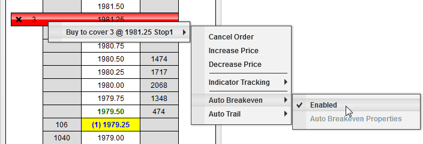

|
<< Click to Display Table of Contents >> Auto Breakeven |


|
Auto Breakeven
|
<< Click to Display Table of Contents >> Auto Breakeven |
|
The Auto Breakeven feature will adjust your Stop Loss order to breakeven (average entry price for the ATM Strategy position) once a user defined Profit Trigger has been reached.
 Understanding the Auto Breakeven parameters
Understanding the Auto Breakeven parameters
Auto Breakeven Parameters
How to enable the Auto BreakevenAuto Breakeven can be set before entering a position as part of a stop strategy, and you can also enable or disable it on a working Stop Loss order.
If you move your mouse over an active Stop Loss order in the buy cell for a buy order or sell cell for a sell order and press down on your right mouse button, you will see a menu of all working orders. Each working order menu has a sub menu that displays any applicable strategies that can be enabled or disabled. In the image below, you can see that Auto Breakeven is currently enabled. By selecting the "Enabled" menu item, you can enable or in this example disable the Auto Breakeven. You can change the parameters by selecting the "Auto Breakeven Properties" menu when Auto Breakeven is disabled.
 |
Auto Breakeven Example #1•Profit Trigger - 8 ticks •Plus - 0 ticks •Average Entry - 1000 Long (SP Emini contract)
As soon as the market trades at 1002 (Average Entry + Profit Trigger = 1000 + 8 ticks = 1002) NinjaTrader will move the Stop Loss order to 1000 (Average Entry + Plus = 1000 + 0 = 1000) and enter a log event in the Log tab.
Auto Breakeven Example #2•Profit Trigger - 10 ticks •Plus - 2 ticks •Average Entry - 10200 Short (DOW Emini contract)
As soon as the market trades at 10190 (Average Entry - Profit Trigger = 10200 - 10 ticks = 10190) NinjaTrader will move the Stop Loss order to 10,198 (Average Entry - Plus = 10200 - 2 ticks = 10198) and enter a log event in the Log tab. |